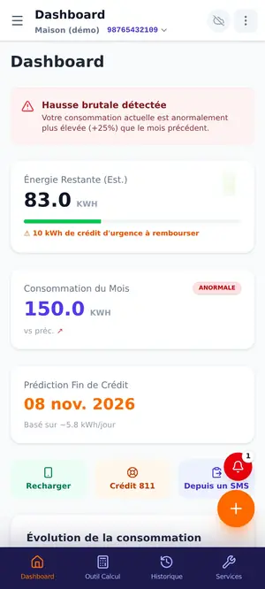
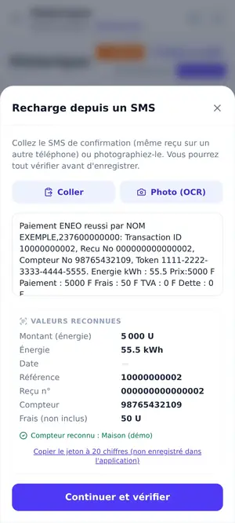
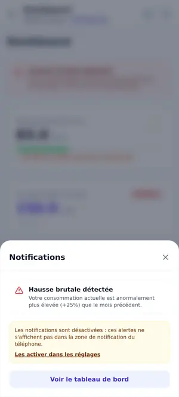
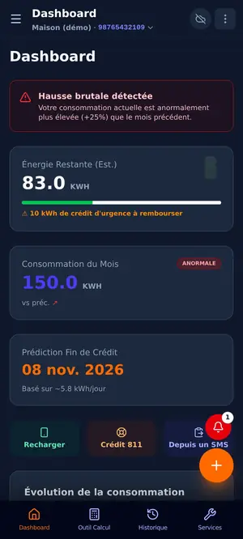
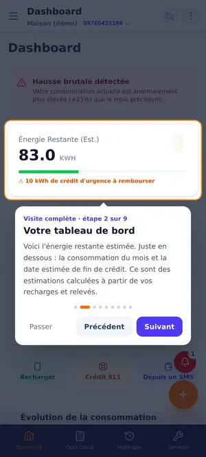

Sachez quand votre crédit d'électricité va finir.
KWA-WATT enregistre vos recharges et vos relevés, calcule vos kWh selon votre tranche tarifaire et estime la date de fin de votre crédit. Gratuit, sans publicité, et il fonctionne sans internet.
Android 7.0 ou plus récent · fichier de quelques Mo

Le compteur prépayé ne dit pas tout
Le compteur affiche un solde, pas ce qui va se passer ensuite. Voici ce que KWA-WATT change.
On découvre la fin du crédit à la coupure
Les recharges se perdent dans les SMS, le prix du kWh dépend de la tranche, les codes du compteur sont difficiles à retenir, et rien ne prévient avant que la lumière s'éteigne.
Tout est rangé, et la fin du crédit est anticipée
Vos recharges et vos relevés sont au même endroit, les kWh sont calculés selon votre tranche, une date de fin de crédit est estimée, et un rappel vous invite à recharger à temps.
Ce que fait KWA-WATT
Les écrans ci-dessous utilisent des données de démonstration fictives.
Recharge par codes courts
MTN MoMo et Orange Money en un geste, plus les codes du compteur et le crédit d'urgence 811 suivi comme une dette.

Recharge depuis un SMS
Collez le SMS de confirmation ou photographiez-le : la lecture se fait sur le téléphone, et vous vérifiez avant d'enregistrer.

Alertes et rappels
Seuil de consommation, hausse brutale, début du mois et rappel de recharge avant la fin estimée du crédit.

Mode sombre
Plus confortable le soir, et économe sur les écrans OLED.

Visite guidée
Une présentation interactive au premier lancement, à revoir quand vous voulez.
- Calcul montant ⇄ kWh et simulateur de tranche
- Plusieurs compteurs, export et import des données
- Synchronisation Google facultative
- Application légère, pensée pour les données mobiles chères
Comment ça marche
Trois étapes, sans compte obligatoire.
- Installez et ouvrezChoisissez le mode visiteur : rien à créer, tout reste sur votre téléphone.
- Enregistrez vos rechargesSaisissez-les, ou collez le SMS de confirmation. Ajoutez vos relevés de consommation.
- Suivez et anticipezLisez l'énergie restante estimée, la date de fin de crédit, et laissez les rappels vous prévenir.
Les chiffres sont des estimations calculées à partir de ce que vous saisissez ; ils ne remplacent pas l'affichage de votre compteur.
Vos données restent les vôtres
Pas de publicité, pas de mesure d'audience dans l'application ni sur cette page.
Hors ligne d'abord
En mode visiteur, vos données ne quittent pas le téléphone. La lecture des photos de SMS se fait sur l'appareil.
Synchronisation facultative
Si vous vous connectez avec Google, vos compteurs, recharges et relevés sont copiés dans un espace privé que seul votre compte peut lire.
Vous gardez la main
Vous pouvez exporter vos données (écran Historique) et supprimer votre compte, avec les données synchronisées, depuis l'écran Profil.
Installer l'application
KWA-WATT est distribuée directement sous forme de fichier APK, depuis GitHub.
- TéléchargezAppuyez sur « Télécharger l'APK ». Le fichier s'appelle
kwa-watt.apk. - Autorisez l'installationÀ l'ouverture du fichier, Android peut demander d'autoriser votre navigateur à installer des applications : acceptez pour cette fois.
- Vérifiez l'empreinteComparez le SHA-256 du fichier avec celui des notes de la version, puis installez.
Comment vérifier l'empreinte SHA-256 ?
Sur la page de la version (GitHub), repérez la ligne « Empreinte SHA-256 ». Sur le téléphone, l'application Termux permet de lancer sha256sum kwa-watt.apk dans le dossier de téléchargement ; sur ordinateur, sha256sum -c kwa-watt.apk.sha256. Les deux empreintes doivent être strictement identiques. Sinon, ne l'installez pas.
Questions fréquentes
Pourquoi un fichier APK et pas le Play Store ?
L'application est indépendante et gratuite, et elle est distribuée directement depuis son dépôt public. Android affiche donc un avertissement propre à tout fichier installé hors du Play Store.
Comment installer un APK ?
Téléchargez le fichier, ouvrez-le depuis les notifications ou le dossier « Téléchargements », autorisez l'installation depuis cette source si Android le demande (« Sources inconnues » ou « Installer des applications inconnues »), puis validez. Vous pouvez retirer cette autorisation ensuite.
Comment mettre à jour ?
Téléchargez la nouvelle version et installez-la par-dessus l'ancienne : vos données sont conservées. Si Android demande de désinstaller d'abord, sauvegardez vos données avant (synchronisation Google ou export dans l'écran Historique).
Sur quels téléphones ça fonctionne ?
Sur Android 7.0 et plus récent. Il n'existe pas de version pour iPhone.
L'application est-elle officielle ?
Non. KWA-WATT est une application indépendante, non affiliée à ENEO / SOCADEL, ni à MTN, ni à Orange. Ces noms appartiennent à leurs propriétaires.
Faut-il un compte ?
Non. Le mode visiteur fonctionne sans compte et sans internet. La connexion Google sert uniquement à synchroniser vos données entre appareils.
Les estimations sont-elles exactes ?
Ce sont des estimations fondées sur vos recharges et relevés. Fiez-vous toujours à l'affichage de votre compteur.
Combien ça coûte ? Puis-je voir le code ?
L'application est gratuite. Son code source est public sous licence Apache 2.0 : dépôt GitHub.